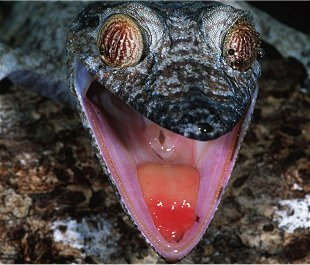

Le gecko à queue feuillue, appelé aussi gecko à queue foliacée, est le spécimen le plus original de la famille des geckos, qui appartiennent à la famille des reptiles. Les habitants de Madagascar l'appellent parfois "taha-fisaka", ce qui signifie démon. On estime aujourd'hui qu'il existe plus de 700 espèces de geckos dans le monde.
|  |
|
Où vit-il ? Il vit à Madagascar et dans les îles de l'océan Indien, et agit principalement la nuit. On peut l'observer dans la réserve spéciale de Nosy Mangabe, au nord de l'île, ou au parc national de la Montagne d'Ambre.
Combien en reste-il aujourd'hui ? Cette espèce très méconnue est difficilement quantifiable. On estime cependant que le commerce pourrait concerner près de 2000 têtes par an
Un nouvel animal de compagnie : Il est de plus en plus répandu comme animal domestique, cédant à la mode des nouveaux animaux de compagnie (NAC), dont l'exotisme suscite de nouvelles passions, notamment aux Etats-Unis. Cette espèce ne peut survivre que dans un milieu très humide, ce qui rend sa captivité difficile.
A savoir : Comme les caméléons, sa couleur marron, qui lui permet de se confondre avec les écorces sèches, indique son humeur, son état de fatigue et sa température. Il doit son nom à l'extrémité de sa queue, qui ressemble à une feuille aplatie en état avancé de décomposition ! S'il se sent menacé, il ouvre son museau découvrant sa bouche rouge vif pour effrayer l'ennemi. Il est toutefois inoffensif, car insectivore.